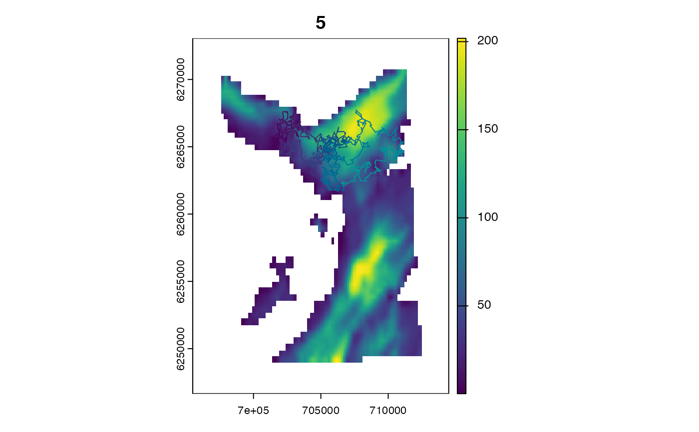
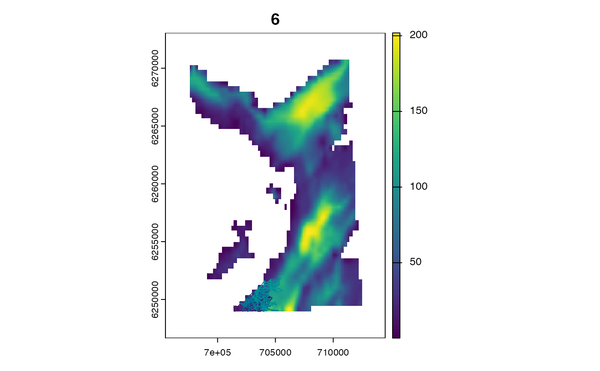
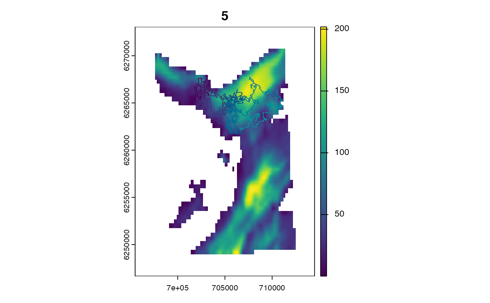
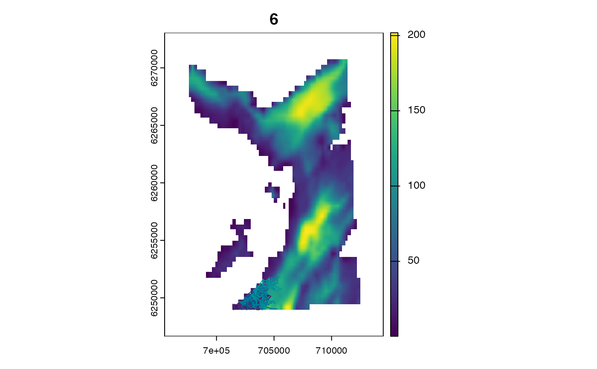
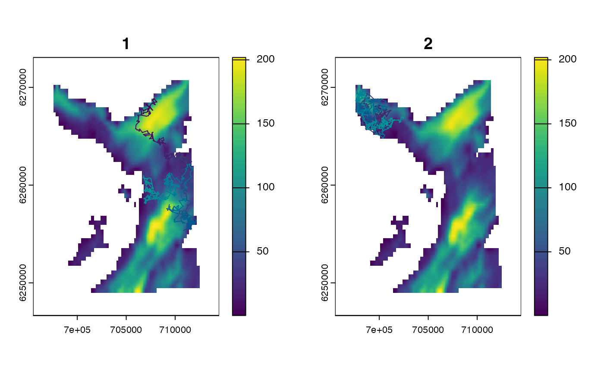
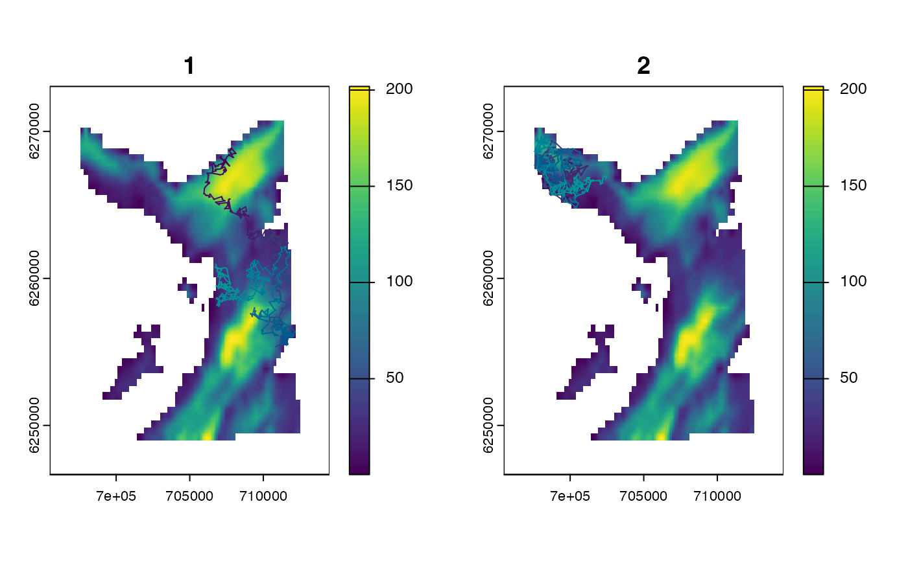

Simulate discrete-time animal movement paths from walk models (e.g., random walks, biased random walks, correlated random walks).
Usage
sim_path_walk(
.map = NULL,
.timeline,
.state = "StateXY",
.xinit = NULL,
.n_path = 1L,
.model_move = model_move_xy(),
.collect = TRUE,
.plot = .collect & !is.null(.map),
.one_page = FALSE
)Arguments
- .map
(optional) On Windows or MacOS,
.mapis aterra::SpatRasterthat defines the study area for visualisation (seeglossary). This argument cannot be used on Linux. Here,.mapis used to:Plot the movement path, if
.plot = TRUE, viaterra::plot();
- .timeline
A
POSIXctvector of regularly spaced time stamps that defines the timeline for the simulation. Here,.timelineis used to:Define the number of time steps for the simulation;
Define the time resolution of the simulation;
- .state
- .xinit, .n_path
Initial
Statearguments..xinitspecifies the initial states for the simulation (one for each movement path).If
.xinitisNULL, initial states are sampled from the map.Otherwise,
.xinitmust be adata.table::data.tablewith one column for each state dimension.
.n_pathis anintegerthat defines the number of paths to simulate.
- .model_move
A
characterstring that defines the movement model (seeModelMoveandglossary).- .collect
A
logicalvariable that defines whether or not to collect outputs from theJuliasession inR.- .plot, .one_page
Plot options, if
.collect = TRUE(permitted on Windows and MacOS). If provided, simulated paths are plotted on.mapand coloured by time step (via the internal functionadd_sp_path())..plotis alogicalvariable that defined whether or not to plot.mapand simulated path(s). Each path is plotted on a separate plot..one_pageis a logical variable that defines whether or not to produce all plots on a single page.
Plot options are silently ignored if
.collect = FALSE.
Value
Patter.simulate_path_walk() creates a Vector of States in the Julia session (named paths).
If .collect = TRUE, sim_path_walk() collects the outputs in R as a data.table::data.table with the following columns:
path_id—anintegervector that identifies each path;timestep—anintegervector that defines the time step;timestamp—aPOSIXctvector of time stamps;x,y,...—numericvectors that define the components of the state;
Otherwise, invisible(NULL) is returned.
Details
This function simulates movement paths via Patter.simulate_path_walk():
Raster and GeoArray maps must be set in
Juliafor the simulation (seeset_map());The internal function
Patter.sim_states_init()is used to simulate the initial state(s) for the simulation; that is, initial coordinates and other variables (one for each.n_path). If.stateis one of the built-in options (seeState), initial state(s) can be sampled from the map. Otherwise, additional methods or adata.table::data.tableof initial states must be provided (seePatter.sim_states_init()). Initial states provided in.xinitare re-sampled, with replacement, if required, such that there is one initial state for each simulated path. Initial states are assigned to anxinitobject inJulia, which is aVectorofStates.Using the initial states, the
JuliafunctionPatter.simulate_path_walk()simulates movement path(s) using the movement model (.model_move).Movement paths are passed back to
Rfor convenient visualisation and analysis.
To use a new .state and/or .model_move sub-type for sim_path_walk():
Define a
Statesub-type inJuliaand provide the name as acharacterstring to this function;To initialise the simulation, write a
Patter.map_init()andPatter.states_init()methods to enable automated sampling of initial states viaPatter.sim_states_init()or provide adata.table::data.tableof initial states to.xinit;Define a corresponding
ModelMovesub-type inJulia;Instantiate a
ModelMoveinstance (that is, define a specific movement model);
sim_path_walk() replaces flapper::sim_path_sa(). Other flapper::sim_path_*() functions are not currently implemented in patter.
See also
sim_*functions implement de novo simulation of movements and observations:sim_path_walk()simulates movement path(s) (viaModelMove);sim_array()simulates acoustic array(s);sim_observations()simulates observations (viaModelObs);
Examples
if (patter_run(.julia = TRUE, .geospatial = TRUE)) {
library(data.table)
library(dtplyr)
library(dplyr, warn.conflicts = FALSE)
#### Connect to Julia
julia_connect()
set_seed()
#### Set up study system
# Define `map` (the region within which movements are permitted)
map <- dat_gebco()
set_map(map)
# Define study period
timeline <- seq(as.POSIXct("2016-01-01", tz = "UTC"),
length.out = 1000L, by = "2 mins")
#### Example (1): Simulate path with default options
sim_path_walk(.map = map,
.timeline = timeline,
.state = "StateXY",
.model_move = model_move_xy())
#### Example (2): Set the starting location via `.xinit`
# Define an initial location
x <- 708212.6
y <- 6251684
origin <- data.table(map_value = terra::extract(map, cbind(x, y))[1, 1],
x = x, y = y)
# Run the simulation
sim_path_walk(.map = map,
.timeline = timeline,
.state = "StateXY",
.xinit = origin,
.model_move = model_move_xy())
points(origin$x, origin$y)
#### Example (3): Simulate multiple paths with the same origin via `.xinit`
sim_path_walk(.map = map,
.timeline = timeline,
.state = "StateXY",
.xinit = origin,
.model_move = model_move_xy(),
.n_path = 4L,
.one_page = TRUE)
#### Example (4): Simulate multiple paths with different origins via `.xinit`
# Manually specify origins
origins <-
map |>
terra::spatSample(size = 4, xy = TRUE, na.rm = TRUE) |>
select("map_value", "x", "y") |>
as.data.table()
# Run simulation
sim_path_walk(.map = map,
.timeline = timeline,
.state = "StateXY",
.xinit = origins,
.model_move = model_move_xy(),
.n_path = 4L,
.one_page = TRUE)
#### Example (5): Customise two-dimensional random walks via `model_move_xy()`
# Adjust distributions for step lengths and headings
model_move <-
model_move_xy(.mobility = "750.0",
.dbn_length = "truncated(Normal(250, 50), lower = 0.0, upper = 750.0)",
.dbn_heading = "VonMises(0.1, 0.1)")
sim_path_walk(.map = map,
.timeline = timeline,
.state = "StateXY",
.model_move = model_move)
# Experiment with other options
model_move <-
model_move_xy(.mobility = "300.0",
.dbn_length = "truncated(Normal(10.0, 50.0), lower = 0.0, upper = 300.0)")
sim_path_walk(.map = map,
.timeline = timeline,
.state = "StateXY",
.model_move = model_move)
#### Example (6): Use other .state/.model_move combinations
# Simulate a random walk in XYZ
sim_path_walk(.map = map,
.timeline = timeline,
.state = "StateXYZ",
.model_move = model_move_xyz())
# Simulate a correlated random walk in XY
sim_path_walk(.map = map,
.timeline = timeline,
.state = "StateCXY",
.model_move = model_move_cxy())
# Simulate a correlated random walk in XYZ
sim_path_walk(.map = map,
.timeline = timeline,
.state = "StateCXYZ",
.model_move = model_move_cxyz())
# Modify movement model parameters
sim_path_walk(.map = map,
.timeline = timeline,
.state = "StateCXYZ",
.model_move = model_move_cxyz(.dbn_heading_delta = "Normal(0, 1)",
.dbn_z_delta = "Normal(0, 0.5)"))
#### Example (7): Use custom .state/.model_move sub-types
# See `?State` and ?ModelMove`
#### Example (8): Simulate numerous paths via `.n_path`
sim_path_walk(.map = map,
.timeline = timeline,
.state = "StateXY",
.model_move = model_move_xy(),
.n_path = 10L)
#### Example (9): Customise plotting options via `.plot` & `.one_page`
# Use one page via `.one_page = TRUE`
sim_path_walk(.map = map,
.timeline = timeline,
.state = "StateXY",
.model_move = model_move_xy(),
.n_path = 2L, .one_page = TRUE)
# Suppress plots via `.plot = FALSE`
sim_path_walk(.map = map,
.timeline = timeline,
.state = "StateXY",
.model_move = model_move_xy(),
.plot = FALSE)
}
#> `Julia` already connected. Set `.socket = TRUE` to reconnect.
#> Warning: Use `seq.POSIXt()` with `from`, `to` and `by` rather than `length.out` for faster handling of time stamps.
 #> Warning: Use `seq.POSIXt()` with `from`, `to` and `by` rather than `length.out` for faster handling of time stamps.
#> Warning: Use `seq.POSIXt()` with `from`, `to` and `by` rather than `length.out` for faster handling of time stamps.
 #> Warning: Use `seq.POSIXt()` with `from`, `to` and `by` rather than `length.out` for faster handling of time stamps.
#> Warning: Use `seq.POSIXt()` with `from`, `to` and `by` rather than `length.out` for faster handling of time stamps.
 #> Warning: Use `seq.POSIXt()` with `from`, `to` and `by` rather than `length.out` for faster handling of time stamps.
#> Warning: Use `seq.POSIXt()` with `from`, `to` and `by` rather than `length.out` for faster handling of time stamps.
 #> Warning: Use `seq.POSIXt()` with `from`, `to` and `by` rather than `length.out` for faster handling of time stamps.
#> Warning: Use `seq.POSIXt()` with `from`, `to` and `by` rather than `length.out` for faster handling of time stamps.
 #> Warning: Use `seq.POSIXt()` with `from`, `to` and `by` rather than `length.out` for faster handling of time stamps.
#> Warning: Use `seq.POSIXt()` with `from`, `to` and `by` rather than `length.out` for faster handling of time stamps.
 #> Warning: Use `seq.POSIXt()` with `from`, `to` and `by` rather than `length.out` for faster handling of time stamps.
#> Warning: Use `seq.POSIXt()` with `from`, `to` and `by` rather than `length.out` for faster handling of time stamps.
 #> Warning: Use `seq.POSIXt()` with `from`, `to` and `by` rather than `length.out` for faster handling of time stamps.
#> Warning: Use `seq.POSIXt()` with `from`, `to` and `by` rather than `length.out` for faster handling of time stamps.
 #> Warning: Use `seq.POSIXt()` with `from`, `to` and `by` rather than `length.out` for faster handling of time stamps.
#> Warning: Use `seq.POSIXt()` with `from`, `to` and `by` rather than `length.out` for faster handling of time stamps.
 #> Warning: Use `seq.POSIXt()` with `from`, `to` and `by` rather than `length.out` for faster handling of time stamps.
#> Warning: Use `seq.POSIXt()` with `from`, `to` and `by` rather than `length.out` for faster handling of time stamps.
 #> Warning: Use `seq.POSIXt()` with `from`, `to` and `by` rather than `length.out` for faster handling of time stamps.
#> Warning: Use `seq.POSIXt()` with `from`, `to` and `by` rather than `length.out` for faster handling of time stamps.

 




 #> Warning: Use `seq.POSIXt()` with `from`, `to` and `by` rather than `length.out` for faster handling of time stamps.

#> Warning: Use `seq.POSIXt()` with `from`, `to` and `by` rather than `length.out` for faster handling of time stamps.
#> path_id timestep timestamp map_value x y
#> <int> <int> <POSc> <num> <num> <num>
#> 1: 1 1 2016-01-01 00:00:00 46.46357 708642.1 6262507
#> 2: 1 2 2016-01-01 00:02:00 44.32810 708764.0 6262474
#> 3: 1 3 2016-01-01 00:04:00 33.80718 708915.9 6262113
#> 4: 1 4 2016-01-01 00:06:00 38.19019 708883.6 6262019
#> 5: 1 5 2016-01-01 00:08:00 33.80718 708937.0 6262101
#> ---
#> 996: 1 996 2016-01-02 09:10:00 57.34976 711214.2 6258025
#> 997: 1 997 2016-01-02 09:12:00 55.80263 711210.3 6257954
#> 998: 1 998 2016-01-02 09:14:00 64.60097 711122.9 6257937
#> 999: 1 999 2016-01-02 09:16:00 72.12959 711216.6 6258345
#> 1000: 1 1000 2016-01-02 09:18:00 40.57153 711729.5 6258656
#> Warning: Use `seq.POSIXt()` with `from`, `to` and `by` rather than `length.out` for faster handling of time stamps.

#> Warning: Use `seq.POSIXt()` with `from`, `to` and `by` rather than `length.out` for faster handling of time stamps.
#> path_id timestep timestamp map_value x y
#> <int> <int> <POSc> <num> <num> <num>
#> 1: 1 1 2016-01-01 00:00:00 46.46357 708642.1 6262507
#> 2: 1 2 2016-01-01 00:02:00 44.32810 708764.0 6262474
#> 3: 1 3 2016-01-01 00:04:00 33.80718 708915.9 6262113
#> 4: 1 4 2016-01-01 00:06:00 38.19019 708883.6 6262019
#> 5: 1 5 2016-01-01 00:08:00 33.80718 708937.0 6262101
#> ---
#> 996: 1 996 2016-01-02 09:10:00 57.34976 711214.2 6258025
#> 997: 1 997 2016-01-02 09:12:00 55.80263 711210.3 6257954
#> 998: 1 998 2016-01-02 09:14:00 64.60097 711122.9 6257937
#> 999: 1 999 2016-01-02 09:16:00 72.12959 711216.6 6258345
#> 1000: 1 1000 2016-01-02 09:18:00 40.57153 711729.5 6258656